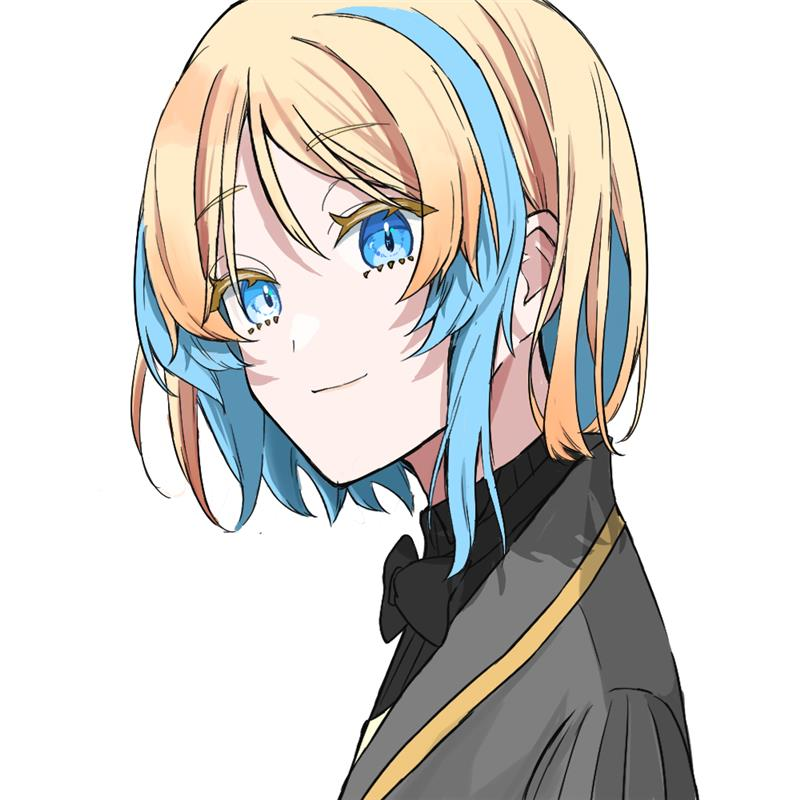
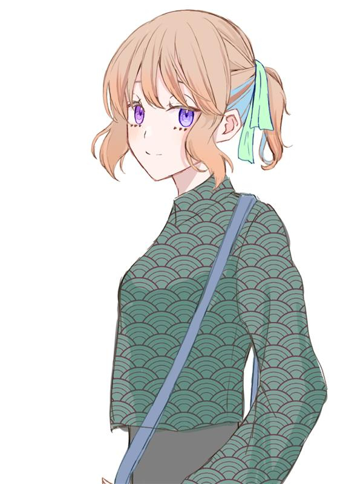
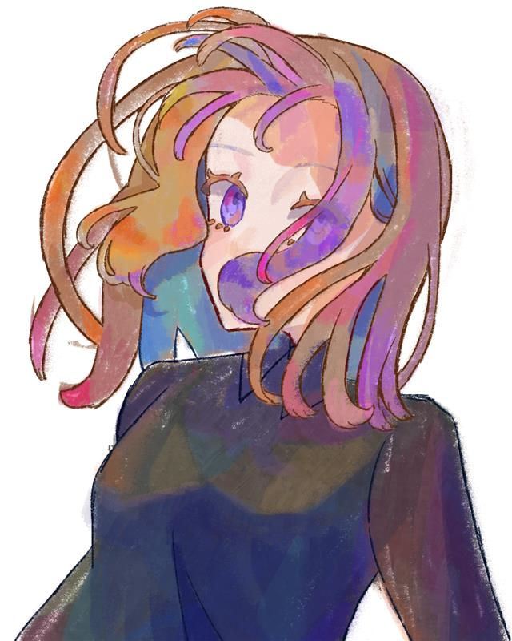

My hobby
ここでは私の趣味を2つ紹介します
TRPG
TRPGとは 「Tabletalk Roll Play Game」の略で、テーブルを囲んで会話をしながら物語を進めていく、アナログゲームの一種です
プレイヤーはそれぞれキャラクターを演じ、ゲームマスター（GM）の進行に合わせて行動を決定し、 他のプレイヤーと協力しながら（時に敵対しながら）物語を紡いでいきます
プレイヤーやGMの創造力や想像力によってさまざまな物語が展開されるのが魅力的です。
下記で紹介するシステム以外にもたくさんのゲームがあります。気になる人は調べてみてね。
私が遊んだことがあるゲームを紹介
クトゥルフ神話TRPG

クトゥルフ神話TRPGごく普通の人々が恐るべきクトゥルフ神話の脅威に立ち向かう、神秘と恐怖のTRPGです。ちなみに海外発祥で元ネタは「ハワード・フィリップス・ラヴクラフト」の小説。
配信者などがプレイしていることも増えてきて、比較的人気なシステムだと思います。
最近の流行は物語重視のシナリオですが、面白さ重視のネタシナリオや推理・謎解きメインのシナリオなど幅広い物語性を含んでいます
>>公式HPはこちら
シノビガミ

シノビガミとはプレイヤーが忍者を演じ、現代社会を舞台に暗躍する物語です。クリエイト性が高く、忍法の組み合わせを考えるのが楽しいシステムです。
プレイヤーは事前に配られたHO（ハンドアウト）に書かれた目的を達成するため、他プレイヤーあるいはNPCの秘密を探ります。そして各々の目的を達成するため最後に戦闘が行われます。
プレイヤー対プレイヤー、あるいはプレイヤー対GMが起こりやすく、ゲーム性が高いシステムとなっています。
>>公式HPはこちら
その他にも紹介
マーダーミステリー
参加者が物語の登場人物となり、殺人事件などの謎を推理する体験型ゲームです。それぞれのキャラクターには秘密の情報や目的が与えられ、プレイヤー同士の会話や駆け引きで真相解明を目指します
TRPGではないのですが、対話型でロールプレイ要素なども含まれるので私もよく遊んでいます。
上記のシステムよりも心理戦、情報戦などの駆け引きがメインのゲームとなっており、ダイスやカードなどの道具を使わずルールも簡単なので初心者向けであるといえます。
イラスト制作



上記のTRPGで作ったキャラクターの立ち絵を描いたりしています。
立ち絵（全身絵）は得意ですが、背景が描けないので一枚絵などは不得意です。